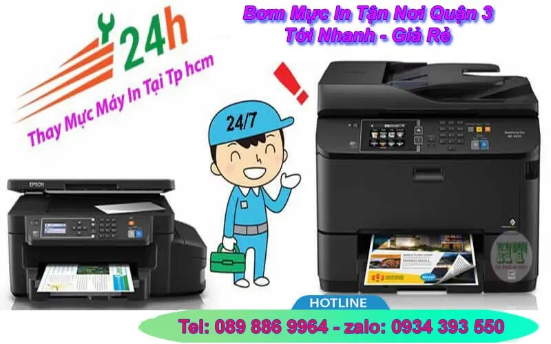
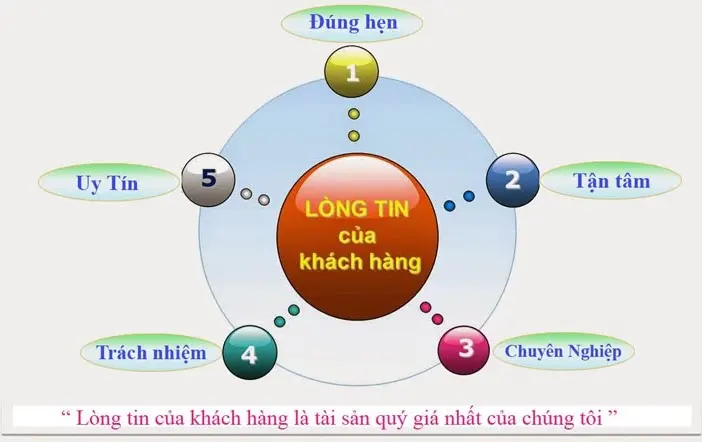

Nạp mực in Tận Nơi quận 3 | Tới Nhanh - Giá Rẻ - 24/7
Công ty Nạp mực máy in tại nhà quận 3 : Nhận bơm mực in tất cả các hãng tại quận 3 như HP - Canon - Samsung - Brother - Ricoh ... Địa chỉ nạp mực : 160 Võ Thị Sáu, Phường Võ Thị Sáu, Quận 3. Số điện thoại dịch vụ - Gọi: 089 886 9964 hoặc nhắn tin Zalo: 0934 393550. Luôn có mặt nhanh nhất chỉ 20 phút, Khắc phục sự cố máy in, mực in kịp thời. Công ty có xuất hóa đơn VAT đầy đủ, Hỗ trợ công nợ cuối tháng với công ty, doanh nghiệp có nhu cầu.
CÔNG TY TNHH TMDV TIN HỌC HI-TECH
Bơm Mực In Tận Nơi Quận 3 | UY TÍN - CHUYÊN NGHIỆP - GIÁ RẺ
Call: 089 886 9964 - Zalo: 0934 39 35 50
" Bơm Mực In Tận Nơi ở Quận 3 : 24/7 "| Kỹ thuật viên luôn túc trực tại khu vực quận 3. Có mặt nhanh nhất chỉ 20 phút

Tin học Hi-Tech cam kết : Nhanh Nhất – Rẻ Nhất – Chất Lượng Nhất
Chuyên: bơm mực máy in màu tại nhà quận 3, sửa máy in, cung cấp hộp mực in ở quận 3 giá rẻ, bảo hành uy tín, địa chỉ cửa hàng 160 Võ Thị Sáu, Phường 8, quận 3, Tphcm, số điện thoại liên hệ: 0934393550
Bạn mệt mỏi vì phải chờ đợi dịch vụ bơm mực quá lâu ? bạn phát chán vì những dịch vụ nạp mực máy in không đạt được chất lượng như mong muốn ? Bạn không hài lòng về giá cả bơm mực máy in quận 3 ?
Hãy để Hitech đánh tan những vướng mắc mà bạn đang gặp phải.
Nạp mực in giá rẻ quận 3
- "Nạp Mực Uy Tín " các loại laser trắng đen, laser màu
- Thay mực máy in phun màu liên tục tại nhà
- ✅ Bơm mực in quận 3 Laser màu : Hp - Canon - Brother
- ✅ Dịch vụ sửa máy in tận nơi Tphcm tại các quận 1, 3, quận 5 ... Tân Bình, Tân Phú
- Sửa máy in tận nơi quận 3 giá rẻ nhất
- Ngoài ra Hitech còn sửa máy tính, hệ thống mạng và tổng đài điện thoại nhanh.
Bơm mực in tại nhà quận 3 - Uy Tín Nhất ?
- Phục vụ tận nơi - nhanh chóng
- Dịch vụ bơm mực máy in tại nhà quận 3.
- Hi-tech luôn làm việc thứ 7, chủ nhật và ngày nghĩ lễ - 24/7
- Nạp mực in giá rẻ quận 3 - tiết kiệm chi phí cho khách hàng.
- Sửa máy in tận nơi nhanh và đảm bảo uy tín
- Hitech Luôn nhận trách trách nhiệm nếu có sự cố xẩy ra.
- Nạp mực máy in quận 3, sửa máy in, máy tính luôn đi kèm với chế độ bảo hành.
- Bản in luôn đẹp sau khi nạp mực và in test.
- Chỉ nhận thanh toán khi khách hàng hài lòng về chất lượng và dịch vụ
- Hướng dẫn, hỗ trợ sửa miễn phí qua điện thoại
- Với công ty, doanh nghiệp có thể thanh toán công nợ vào cuối tháng.

3. Chất Lượng Dịch Vụ Của Hitech Như Thế Nào ?
- Với đội ngũ kỹ thuật nhiều năm kinh nghiệm trong lĩnh vực nạp mực máy in và máy tính, rãi đều tại các quận huyện Tp HCM như: quận 1, quận 3, quận 5, 6, 10, 11, quận Phú nhuận, quận tân bình, quận Tân phú ...
- chúng tôi luôn mong muốn đem đến dịch vụ nạp mực máy in tận nơi quận 3 nhanh & chất lượng nhất, cùng với chế độ hậu mãi và bảo hành Uy tín.
- Nắm bắt nhu cầu cần nạp mực máy in giá rẻ quận 3 nhanh cho chất lượng đẹp của Quý công ty, doanh nghiệp cũng như những cá thể khác. HiTech computer luôn nhắc nhở mỗi KTV phải luôn lấy quy tắt " khách hàng là thượng đế " để phục vụ tốt nhất. có được niềm tin của quý khách hàng là sự thành công của chúng tôi
- Luôn có kỹ thuật túc trực tại quận 3 Tp HCM, Khi quý khách gọi sẻ có kỹ thuật đến ngay trong vòng 20'
- Mua bán hộp mực máy in ở quận 3 giá rẻ
+ Bán hộp mực máy in hp ở quận 3 : hộp mực 337, cardtrige 36a...
+ Mua bán hộp mực in canon : canon 2900, canon lbp, hộp mực 83, hộp 85
+ shop nạp mực máy in tại quận 3 uy tín - giá rẻ nhất
+ Bán hoopj mực máy in brother: Hl 2240, TN 1010, TN 2385, Brother 7535 ...
-->> hãy cho chúng tôi biết " Loại máy in bạn đang dùng & địa chỉ ". kỹ thuật viên sẽ đến ngay trong vòng 20' : Hotline - 089 886 9964
Địa chỉ nạp mực in tại quận 3 của Hi-Tech
Tin học Hi-Tech tại quận 3 luôn có đội ngũ kỹ thuật viên túc trực tại quận 3 và các khu vực lân cận, có mặt nhanh nhất chỉ 20 phút sau khi nhận được yên cầu cần thay mực in tại nhà quận 3 của quý khách hàng.
Trong trường hợp quý khách hàng cần nạp mực tại cửa hảng của Hi-Tech có thể mang đến địa chỉ 160 Võ Thị Sáu, Phường Võ Thị Sáu, Quận 3, tphcm. Liên hệ tel : 089 886 9964 - hoặc nhắn tin zalo : 0934 393 550
Công ty mực in Hi-Tech ở quận 3 nhận : thay mực in tận nơi các công ty doanh nghiệp, nạp mực máy in tại nhà khác hàng ở quận 3 và các quận lân cận. Dịch vụ nạp mực in của chúng tôi có xuất hóa đơn vat đầy đủ theo yêu cầu của quý khách khàng.
Mực nạp của Hi-Tech là loại mực được nhập khẩu từ Japan, USA, Malaysia cho bản in đậm đẹp, sắt nét - Tăng cường tuổi thọ cho hộp mực in - máy in.
Cửa hàng bơm mực in tại quận 3 của Hi-Tech làm việc tất cả các ngày trong tuần, kể cả thứ 7, chủ nhật và các ngày nghĩ lễ, Nhận bơm mực máy in ngoài giờ, thay mực in buổi tối ở quận 3.
Ngoài thay mực in tận nơi quận 3 Hi-Tech còn nhận sửa máy in tại nhà, sửa máy tính tận nơi, lắp đặt hệ thống mạng, tổng đài, camera quan sát.
Cần Nạp mực in nhanh ở quận 3 liên hệ tel : 0934 393 550 - Zalo: 0934 393 550
4. Bảng Giá Nạp Mực Máy In Quận 3
Công ty nạp mực máy in tại quận 3 "Nhanh Nhất 24/7"
Bơm mực in màu Giá rẻ như: nạp mực máy in màu hp cp 1025, mực máy in hp 176, máy in hp 177, nap mực màu hp m280, bơm mực in màu hp m281, nạp mực máy in hp m452, thay mực in màu hp m242, đổ mực máy in laser ...
Cảm ơn quý khách đã sử dụng dịch vụ Nạp mực máy in tại nhà quận 3 của công ty chúng tôi trong thời gian qua. Với độ ngũ kỹ thuật viên tay nghề cao, nhiều năm kinh nghiệm, chúng tôi luôn đặt tiêu chí: " Khách hàng là thượng đế" lên hàng đầu
Công ty thay mực máy in tại quận 3 uy tín, giá rẻ nhất ở tphcm, cửa hàng bơm mực máy in tận nơi, tại nhà nhanh chóng, hỗ trợ tư vấn bom muc in quan 3 miễn phí.
Các chi nhánh nạp mực in gần quận 3 như quận 1, quận 5, quận 10, quận phú nhuận, quận bình thạnh. Hi-Tech đều có kỹ thuật viên luôn túc trực
Công ty Hi-Tech cung cấp mực in tại quận 3, bán mực in phun nươc các loại hp, canon, brother, epson, công ty nạp mực in có xuất hóa đơn đỏ quận 3,
Dịch Vụ Sửa Chữa, Bơm Mực Máy In Tận Nơi
- Kiểm tra, sửa chữa, cài đặt phần mềm máy in, máy fax
- Nạp mực máy in ở quận 3 laser trắng đen: Hp, Canon
- Bơm mực máy in tại quận 3 laser màu : HP, Canon, Brother......
- Đổ mực máy in phun màu tận nơi: HP, Canon, Epson...
- Thay thế linh kiện máy in, mực in chính hãng, giá rẻ
- Nạp mực máy in quận 3 chất lượng, kiểm tra sự cố máy in, máy fax...
- Dịch vụ vệ sinh mực in, máy in tận nơi Tp.HCM
Quy Trình Nạp Mực Máy In Tận Nơi:
1. Lựa chọn mực theo đúng hãng máy in
2. Tháo các bộ phận của hộp mực
3. Làm vệ sinh ố hút sạch bụi, dò các hư hỏng hao mòn của các bộ phận.
4. Hút sạch mực thừa
5. Lắp ráp các chi tiết đã làm sạch
6. Đổ mực mới
7. Reser hộp mực nếu cần
8. In test để kiểm tra chất lượng
9. Bảo dưỡng máy miễn phí trước khi thay, đổ mực máy in quận 3
10 Tư vấn về mực máy in, giao, thay và đổ mực tại quận 3
11. Hỗ trợ bảo hành đến hết mực trong máy.
Các dịch vụ liên quan đến nạp mực máy in tận nơi
+ Nạp mực máy in cho các dòng máy HP, Canon, Samsung, Epson, Brother, Lexmark, Xerox...
+ Sửa chữa tất cả các lỗi máy in như: kẹt giấy, in mờ, không load giấy ...
+ Bơm mực cho các dòng máy in phun.
+ Lắp đặt hệ thống mực in liên tục.
+ Thay film máy fax, sửa chữa máy scan, photo...
+ Cung cấp linh kiện máy in chính hãng: Trống in, gạt mực, drum máy in
+ Cung cấp hộp mực chính hãng
+ Reset chip mực in
+ Các giải pháp về in ấn
+ Mua bán, tra đổi linh kiện máy in, mực in, máy in chính hãng
+ Thay mực máy in ricoh sp 150, sp 200, sp 310
bơm mực laser màu giá rẻ quận 3
Nếu cần bơm mực máy in gấp ở quận 3 hãy gọi: 0934393550
Các Dịch Vụ Liên Quan Tại Quận 3
- Công Ty Nạp mực máy in giá rẻ quận 3 canon tận nơi quận 3 HCM
- Công Ty Bơm mực máy in quận 3 A3, A4 ở HCM
- Công Ty Bơm mực máy in màu các loại như Hp, Canon, Brother ...
- Công Ty Thay mực máy in Samsung quận 3 HCM
- Công Ty Nạp mực máy in Brother ở quận 3
- Nơi bơm mực in nhanh ở quận 3 ?
- Công Ty Đổ mực máy in Recoh tận nơi quận 3 TP HCM
- Dịch vụ Đổ mực máy in Xeroc tại nhà quận 3 TPHCM
- Dịch vụ Nạp mực máy in Lexmark ở quận 3 HCM
- Dịch vụ thay mực tại quận tân bình máy in hp, canon TpHCM
- Dịch vụ Đổ mực máy in các loại Panasonic, xerox, recoh
- shop bơm mực in tại quận 3
- Cửa hàng nạp mực in quận 3 nhanh nhất
- Cửa hàng bơm mực máy in quận 3 giá rẻ
- Công ty bơm mực máy in giá rẻ - uy tín tại quận 3
- Cần bơm mực máy in gấp tại quận 3
- Dịch vụ thay mực máy in tại quận 3 chuyên nghiệp
- Bơm mực máy in màu tphcm
- Xem thêm địa chỉ bơm mực in quận 4
Ngoài đổ mực máy in tại nhà quận 5 còn có các dịch vụ như
- Dịch vụ tận nơi Sửa máy in bị kẹt giấy ở quận 3
- Dịch vụ Sửa máy in báo lỗi đèn đỏ, không in được tại quận 3
- Sửa máy in tại nhà không láy giấy lên được tại quận 3
- Sửa máy in tại nhà bị hư không in được tại nhà quận 3
- Sửa máy in tại nhà không lên nguồn ở quận 3
- Sửa máy in tận nơi bị lem, nhòe mực ở quận 3
- Sửa máy in không nhận mực in ở quận 3 Tp. HCM
- Cần bơm mực in nhanh quận 3
- Thay mực in gấp ở quận 3
Các chi nhánh bơm mực tại nhà của Hi-Tech tại Tphcm
Địa chỉ nạp mực in quận 3 ?
239/63/37 Trần văn đang, phường 11, quận 3
hotline: 089 886 9964 - zalo: 0934 393550
Thay mực quận 3
Khu Vực Thay mực máy in Tận Nhà Ở Q3 Chất Lượng
Khu Vực, Trung Tâm, Địa điểm, q2, Cửa hàng, pc, laptop, Đơn vị, Cty, Chỗ, Nơi, Công Ty, Bệnh Viện, Trường Học, Nhà hàng, Quán cafe, doanh nghiệp, xí nghiệp, nhà văn hóa, vòng xoay, ngã 5, ngã tư, ngã 6, Chung Cư, Tòa Nhà, Máy tính xách tay, Cao Ốc, Rạp Chiếu Phim, Cầu Vượt, Nhà Riêng, Cơ Quan, bùng binh, nạp mực in ở đâu giá rẻ, thay mực máy in ở đâu uy tín, thay mực in ở đâu nhanh chóng, bơm mực máy in ở đâu chất lượng, ở đâu đổ mực in giá rẻ, máy tính để bàn, ở đâu nạp mực máy in uy tín, ở đâu thay mực in chất lượng, ở đâu đổ mực in nhanh chóng, nạp mực may in giá rẻ cửa hàng nào châm mực in giá rẻ, đơn vị nào thay mực in nhanh chóng, công ty nào bơm mực in chất lượng, ở đâu bơm mực in tận nơi, đơn vị nào đổ mực in tận nơi, công ty nào thay mực máy in tận nhà, cửa hàng nào bơm mực in tại nhà,...
Các đường mà Tin Học Hi-tech bơm mực máy in nhanh:
Đường Trương Quyền, Đường Trần Quốc Thảo, Đường Lê Ngô Cát, Đường Dân Chủ, Đường Trần Cao Vân, Đường Hai Bà Trưng, Đường Trương Định, Đường Kỳ Đồng, Đường Nguyễn Thị Minh Khai, Đường Sư Thiện Chiếu, nạp mực máy in Đường Võ Thị Sáu, Đường Cách Mạng Tháng Tám, Đường Cao Thắng, Đường Tú Xương, Đường Kênh Nhiêu Lộc, Đường 3 Tháng 2, Đường Lý Chính Thắng, Đường Ngô Thời Nhiệm, Đường Vườn Chuối, Đường Phạm Ngọc Thạch, Đường Bà Huyện Thanh Quan, Đường Trần Quốc Toản, Đường Đoàn Công Bửu, Đường Cư Xá Đô Thành, Đường Nguyễn Hiền, Đường Điện Biên Phủ, Đường Trần Văn Đang, Đường Phạm Đình Toái
Các tuyến phường chuyên thay mực in tận nhà q3 chuyên nghiệp
Phường 8, Phường 2, Phường 3, Phường 12, Phường 7, Phường 1, Phường 9, Phường 11, Phường 4, Phường 5, Phường 6, Phường 10, Phường 13, Phường 14, Đổ Mực In Tại Nhà Quận 3.
http://www.tinhocht.com/home/nap-muc-may-in-quan-3
cửa hàng bơm mực brother quận 3, công ty nạp mực in samsung quận 3, nạp mực uy tín tại quận 3, cửa hàng bơm mực máy in canon, thay mực hp giá rẻ quận 3
Các chi nhánh bơm mực máy in tại nhà của Hi-Tech tại tphcm
Nạp mực máy in tận nơi
- Thay mực máy in quận 1
- Nạp mực máy in tận nơi quận 5
- Bơm mực máy in quận 6
- Nạp mực in tại quận 10
- Bơm mực máy in quận 11
Bơm mực máy in màu giá rẻ
- Bơm mực máy in quận tân bình
- Nạp mực máy in quận tân phú
- Thay mực in tận nơi quận bình tân
- Bơm mực máy in quận phú nhuận
- Nạp mực máy in quận bình thanh
Địa bàn nhận nạp mực máy in tại Quận 3
Từ cửa hàng ở 79 Bắc Hải (Quận 10) sang Quận 3 khoảng 2,8 km, kỹ thuật chạy mất chừng 10 phút. Đây là quãng đường đi lại hằng ngày nên khách gọi buổi sáng thường được nhận trong buổi.
Kỹ thuật nhận việc trên khắp các tuyến Cách Mạng Tháng 8, Nam Kỳ Khởi Nghĩa, Võ Văn Tần, Lý Chính Thắng, Trần Quốc Thảo, Điện Biên Phủ, Nguyễn Đình Chiểu và Bà Huyện Thanh Quan cùng những khu vực lân cận. Khách ở quanh chợ Bàn Cờ, Hồ Con Rùa, Bệnh viện Bình Dân, chợ Nguyễn Văn Trỗi và khu văn phòng Nam Kỳ Khởi Nghĩa là nhóm gọi thường xuyên nhất, phần lớn là văn phòng, cửa hàng photo và hộ kinh doanh in hoá đơn mỗi ngày.
Nhà hoặc công ty nằm trong hẻm, trên tầng cao hay trong toà nhà văn phòng đều nhận bình thường, không tính thêm phí. Máy đặt ở đâu thì bơm mực ngay tại đó, không cần tháo máy mang đi.
Giá nạp mực máy in bao nhiêu tiền?
Bảng giá áp dụng tại TP.HCM, đã gồm công đến tận nơi — không phụ thu phí đi lại:
| Loại máy in | Giá nạp mực |
|---|---|
| HPLaser trắng đen | 90.000VNĐ / lần nạp |
| HPLaser màu | 300.000VNĐ / lần nạp |
| CanonLaser trắng đen | 90.000VNĐ / lần nạp |
| CanonLaser màu | 300.000VNĐ / lần nạp |
| BrotherLaser trắng đen | 140.000VNĐ / lần nạp |
| SamsungLaser trắng đen | 120.000VNĐ / lần nạp |
| PanasonicLaser trắng đen (máy in – fax) | 150.000VNĐ / lần nạp |
| XeroxLaser trắng đen | 120.000VNĐ / lần nạp |
| Epson · Canon · HP · BrotherMáy in phun màu | 90.000VNĐ / lần nạp |
- Giá trên đã bao gồm công nạp mực tận nơi trong nội thành TP.HCM — không phụ thu phí đi lại.
- Bảo hành đến hết mực nếu bản in bị lỗi sau khi nạp.
Câu hỏi thường gặp khi nạp mực máy in Quận 3
Bảo hành sau khi nạp mực thế nào?
Bảo hành đến khi hết hộp mực. Trong thời gian đó bản in bị mờ, lem hay sọc thì gọi lại, kỹ thuật quay lại xử lý miễn phí.
Bao lâu thì có kỹ thuật tới Quận 3?
Trong giờ hành chính thường 20–30 phút kể từ lúc gọi, vì luôn có kỹ thuật trực sẵn ở khu vực Quận 3 và Quận 1 và Quận 10. Giờ cao điểm hoặc trời mưa có thể lâu hơn khoảng 15 phút.
Nạp mực máy in ở Quận 3 giá bao nhiêu?
Máy in laser trắng đen 90.000đ, laser màu 300.000đ, máy in phun 90.000đ — giá đã gồm công tới tận nơi trong Quận 3, không phụ thu phí đi lại. Máy cần thay thêm linh kiện thì báo giá trước khi làm.
Khu vực nào trong Quận 3 được nhận nạp mực tận nơi?
Toàn bộ Quận 3, gồm các tuyến Cách Mạng Tháng 8, Nam Kỳ Khởi Nghĩa, Võ Văn Tần, Lý Chính Thắng và vùng quanh chợ Bàn Cờ, Hồ Con Rùa, Bệnh viện Bình Dân. Nhà trong hẻm hay văn phòng trên tầng cao đều nhận, không tính thêm phí đi lại.
Nạp mực máy in ở khu vực gần Quận 3
Kỹ thuật phụ trách Quận 3 cũng nhận việc ở các quận sát bên. Nhà hoặc công ty nằm ở ranh giới thì bấm vào khu vực gần mình nhất để xem giá và thời gian có mặt: